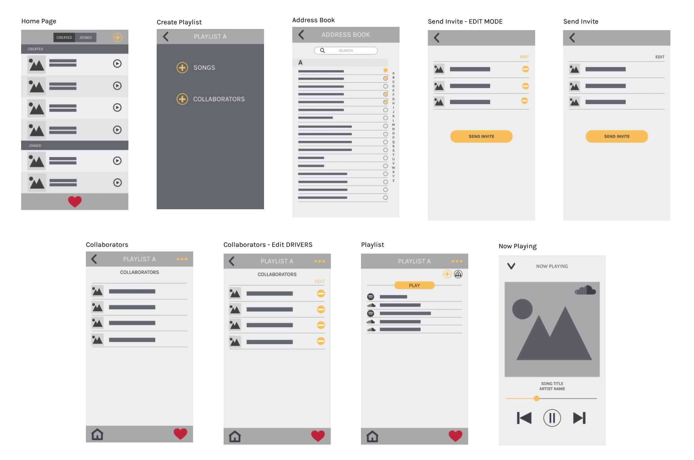

Multi-source, cross platform streaming app. Allows for one device to “drive” while others connect to add songs to a communal playlist.
Multi-source, cross platform streaming app. Allows for one device to “drive” while others connect to add songs to a communal playlist.
Jukebox has been a bit of a pet project of mine. I remember the first time I went to a party in college, and someone drunkenly stammered and fumbled their way through the process of unplugging someone's phone from the stereo so they could plug in their own. Smart Phones had been the norm for a few years at this point, we all had Spotify and SoundCloud, but for some reason our music was fragmented.
There had to be a better way.
Jukebox was inspired by its namesake, the classic neon covered record players that crowdsourced the communal playlists for American diners. It finally saw the light of day in the spring of 2016, when I had the opportunity to serve a the Product Manager for a small team, and build out a working MVP(minimum viable product). At this point, users are able to create accounts, search and add songs to playlists from SoundCloud, and autoplay the added tracks.

I worked closely with Angel Pang - UX Designer to rapidly iterate through a series of potential design for a future mobile app. Her help was invaluable, and we were able to establish a simple, and logical userflow.
More information can be found at http://jukebox.surge.sh or on the repo: https://github.com/jfadem82/jukebox
A live demo of the platform can be found here: https://jukebox-pmi.herokuapp.com/#/home